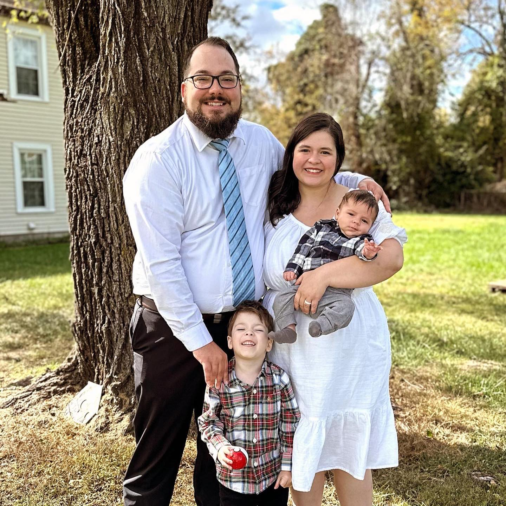
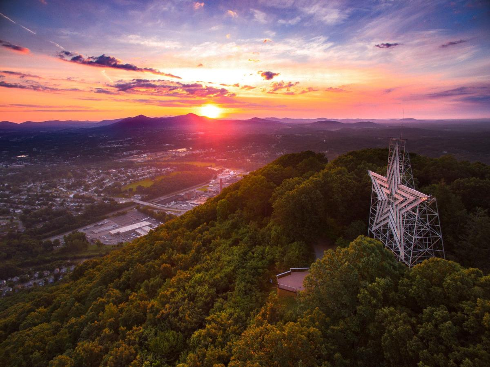

About Me
My name is Jalielle Curtis. I am orginally from Bountiful, UT but have lived in Roanoke, VA for the last 4 years. I have two beautiful boys ages 1 & 5, who are the light of my life. I also teach piano aside from my coursework. In my limited free time, I enjoy watching reality T.V. shows, crocheting and swimming. I am currently majoring in Software Development with a hope to work from home after my graduation next summer.
Roanoke, VA, USA

Roanoke is in South Western Virginia about an hour from both West Viriginia and North Carolina. It is known as the "birthplace of a nation. Virginia is home to many presidents and has many sites from the Revolutionary War. The slogan "Virginia is for lovers" is what we are known for. We are also home to the FBI Training Facility at Quantico, which is well-known in the police drama world. It is a beautiful area that I am glad to call my home."